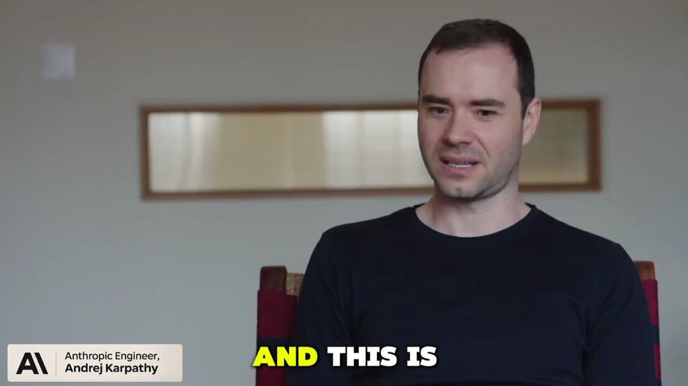
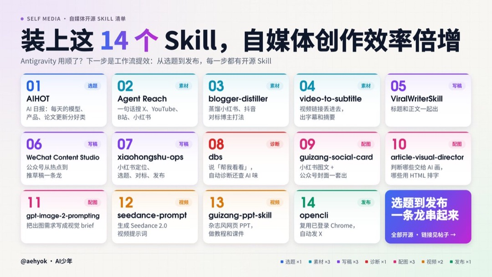
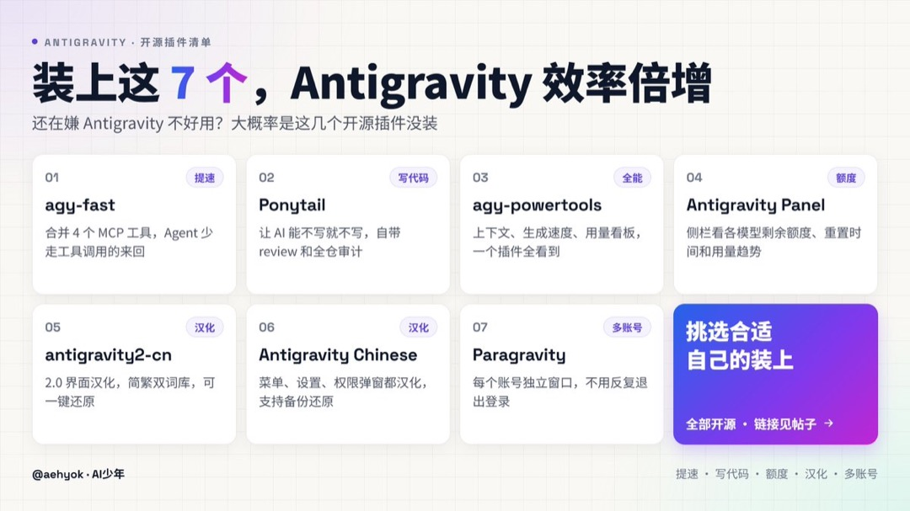

本期速览
01 Karpathy 谈从演示到 AGI 的鸿沟
02 pstack poteto-mode 规范单 Agent 工程流程
03 Atlassian 全员 AI builder 实验一月失败
04 Agent 检索应降级为普通工具而非前置 RAG
01｜Karpathy 谈从演示到 AGI 的鸿沟
来源（X） · @tyay2015 · 2026-11-27 19:05
早在 2014 年，他在 Waymo 工作的朋友就带他试乘过一次无人驾驶，围着街区绕了半小时，体验几乎完美。按理说那会儿技术看着已经成了，可从那趟近乎完美的演示，走到今天旧金山街头能掏钱打车的城市级产品，整整花了十年——而且放到全球范围，其实连边都还没摸到。
Karpathy 借这事给当下火热的 AGI 泼了点凉水：从“演示看着很惊艳”到“真正变成改变世界的产品”，中间隔着一条漫长到超乎想象的鸿沟。半小时演示里你碰不到那些奇葩长尾场景，也绕不开现实世界的监管和落地摩擦。
聊起老东家特斯拉和 Waymo 的路线之争，他的判断依然很反主流。外面看现在好像是 Waymo 占上风，但他反倒更看好特斯拉。理由很直白：特斯拉面对的是软件问题，Waymo 面对的是硬件和规模化问题，而软件问题终究比硬件容易解决得多。
他还点出一个很多人没留意的细节：大家总以为特斯拉是死磕纯视觉、一点昂贵传感器都不用，其实根本不是。特斯拉在训练阶段照样开着满车顶激光雷达和各种昂贵传感器的采集车满街跑、做建图，只不过它把这些高成本信息在后台蒸馏进了神经网络，等真正装进量产车上路推理时，只留摄像头就行。在他眼里，这是一场极其精明的传感器套利。
顺着这个逻辑，他谈起自己离开前参与过的 Optimus 人形机器人，直接笑称“特斯拉压根不是一家汽车公司，而是一家规模化机器人公司”。汽车本身就是长着轮子的机器人，两者能复用的东西比外界想象的多太多。早期的 Optimus 甚至直接跑着特斯拉汽车的神经网络和同款摄像头，在办公室里晃悠的时候，满脑子想的还是识别哪里是“可行驶路面”——它真以为自己是一辆车。
至于很多人幻想人形机器人很快进家门叠衣服、做家务，Karpathy 觉得这步肯定在最后。理由很现实：机器还没完美，万一在家里摔倒把老奶奶压着了，法律责任谁都扛不住。最稳妥的落地路径一定是先卖给自己，丢进自家工厂搬物料慢慢磨合，再卖给有大型仓库的 B2B 企业围起护栏干活，最后才轮到普通家庭。而之所以非要做成“人形”，除了世界本来就是按人类尺寸建的，更关键的是人形极其方便人类通过遥操作采集数据，而且所有任务共用一个身体、一套神经网络，今天学捡落叶攒下的数据，明天能反过来帮其他动作做迁移学习。
聊到大家最关心的大模型瓶颈，他的观点同样干脆：架构早就不是卡脖子的地方了。Transformer 本质上是一块极其通用的“可微分计算组织”，过去五六年除了塞进去一个旋转位置编码（RoPE），底子几乎没大动过，大家现在拼的全是数据和损失函数。
互联网上的网页数据其实只是个粗糙的替代品——里面 99.99% 都是零碎事实，真正的“思考过程”恐怕连千分之一都不到。如果我们手里有十亿条人类解题时的内心独白轨迹，AGI 差不多也就成了。所以接下来绕不开合成数据，但他特别提醒了一个隐蔽的坑：模型的“静默坍塌”。你去让 ChatGPT 讲个笑话，单看每一次输出都挺像样，可多问几次就会发现，它翻来覆去其实就只知道那两三个段子。单个样本看不出毛病，但整个分布的多样性和信息熵早就在不知不觉中塌掉了。想让合成数据管用，最难也最关键的是想办法往里强行注入多样性，比如塞进十亿种不同的人物背景，逼着模型去探索更宽的空间。
更有意思的是他对模型体积的想象。现在的大模型动辄几百上千亿参数，很大一部分容量其实全浪费在死记硬背各种乱七八糟的冷门知识和哈希值上了。如果把记忆剥离出去交给外部工具检索，只留一个纯粹用来思考的“认知核心”，靠蒸馏技术压到最后，他觉得可能只需要 10 亿参数甚至更小就够了。
一旦模型小到能塞进随身设备，它就会彻底变成挂在我们新皮层外面的“外置大脑（Exocortex）”。就像如今很多人离开手机导航连自家城市都认不清路一样，以后摘掉智能眼镜可能连外语都听不懂。这里就冒出一个挺扎心的问题：币圈有句老话叫“不是你的私钥，就不是你的币”，放到 AI 时代就是“不是你的权重，就不是你的大脑”。平时图省事用几家闭源巨头最强的云端模型没问题，但开源生态一定要跟得上，否则你等于把自己的一部分脑子完全租给了别人。
后半段聊到为什么离开 OpenAI 去做教育公司 Eureka Labs，Karpathy 没讲什么宏大口号，只说自己一直站“人类队”。现在市面上太多人在琢磨怎么用 AI 替代人、把人清出局，他更想看看如果给地球上每个人配齐最好的课程和一对一导师，人类的上限到底能被推多高。
他很清楚当下模型的能力边界：现在的 AI 还写不出一门真正顶级的课程，所以人类名师得退到后台，专心打磨教材和体系；AI 则站到前台当助教，用各种语言、顺着每个人的节奏把课讲透，把一位好老师的能力复制到八十亿人面前。
不过他也特意给“寓教于乐”泼了盆冷水。在他看来，真正的学习从来不该是刷短视频那种被内容冲刷的轻松消遣，它更像是给大脑去健身房撸铁——得费劲、得流汗，酸痛过后才会有那种踏实的爽感。哪怕将来到了不需要靠学历找工作的后 AGI 时代，他依然希望社会崇尚的是一种把“练脑子”当成日常习惯的文化。
访谈最后，主持人替所有家长问了一句：如果家里现在有小孩，到底该学什么才能扛住未来？
Karpathy 几乎没犹豫，直接给出了他心里的“正确答案”：至少把八成精力花在数学、物理和计算机这类偏符号推演的硬核学科上，别再去死磕靠死记硬背的科目。论记东西，人脑一辈子都卷不过电脑；可趁着年轻脑子还没定型，用数理逻辑在大脑里刻下一道道思考的沟壑，不管以后 AI 进化成什么样，这套底层的解题习惯，都是谁也拿不走的硬本事。

02｜pstack poteto-mode 规范单 Agent 工程流程
来源（X） · @yiqiangchen_ · 2026-11-27 11:37
花了很长时间不得要领，所以我决定由点及面循序渐进的介绍一下。
在构建多Agent协同的“米其林厨房”之前，需要先确保单Agent能够写出符合预期的高质量代码。而这就需要使用到 pstack 中非常重量级的一个技能：poteto-mode
poteto-mode 是准备执行严谨工程任务的入口，当它接收到一个任务后，它会先弄清目标，再用实验验证猜想，只做证据支持的改动，最后跑一遍真实流程，确认问题解决。
https://github.com/cursor/plugins/tree/main/pstack/skills/poteto-mode
03｜Atlassian 全员 AI builder 实验一月失败
来源（X） · @mylifcc · 2026-11-27 17:02
Atlassian AI 负责人 Sherif Mansour 最近在 Lenny 播客里复盘：当时他们把传统的 PM 和设计师角色全部撤掉，让小队里每个人都直接拿 AI 动手造产品。头一两周确实飞快，功能一个接一个往外冒，但到了第四周所有人都开始犯迷糊，最后大家还是自发退回到了产品、设计、研发各司其职的分工。
团队复盘下来的核心原因只有一句话：“代码吞吐量早就不是瓶颈了，方向才是。” 当把想法变成代码几乎零成本时，谁来决定到底该做什么、不该做什么，反而比以前更稀缺了。
04｜Agent 检索应降级为普通工具而非前置 RAG
来源（X） · @dohewater · 2026-11-27 22:40
传统 RAG 最大的问题不是「搜不准」，而是架构上就反着来：
1. 它把检索做成了前置黑盒，模型还没开始思考，Top-K 就先替它把上下文裁死了，召回漏了后面再聪明也救不回来。
2. 硬切出来的碎片破坏了原始结构，别说模型，人自己 debug 看那一堆 chunk 都一头雾水。
RAG 真正该去的位置，不是挡在 Agent 前面的流水线，而是降级成 Agent 手里的一个普通工具——跟 grep、SQL、读文件平起平坐。什么时候搜、搜不到换什么词、要不要顺藤摸瓜继续查，必须让 Agent 自己做主。
05｜14 个开源 Skill 串起自媒体工作流
来源（X） · @aehyok · 2026-11-27 09:59
那工具用顺了之后，我觉得真正拉开差距的就是自媒体创作工作流的提效。
简单复盘一下我自己现在在用的 14 个开源 Skill，按「选题 → 素材 → 写稿 → 去 AI 味 → 配图 → 发布」串成了一条线，每一步都有对应的工具。
1、选题：今天写什么
AIHOT：AI 方向的日报，模型发布、产品更新、新论文分好类摆出来，匿名只读，不用 API Key
https://github.com/KKKKhazix/khazix-skills
2、素材：找对标、扒内容
Agent Reach：一句话搜 YouTube、X、B站、小红书、公众号等十几个平台，扒字幕、读帖子
https://github.com/Panniantong/agent-reach
安装：把这句发给 Agent
帮我安装 Agent Reach：https://raw.githubusercontent.com/Panniantong/agent-reach/main/docs/install.md
blogger-distiller：拆解对标博主的爆款打法
https://github.com/otter1101/blogger-distiller
video-to-subtitle-summary-skill：视频链接丢进去，出字幕和摘要
https://github.com/imlewc/video-to-subtitle-summary-skill
3、写稿
ViralWriterSkill：标题和正文一起出
https://github.com/nashsu/viral_writer_skill
WeChat-Official-Account-content-studio：公众号从热点、选题、写作、排版到推送草稿，一条龙
https://github.com/wengzige/WeChat-Official-Account-content-studio
xiaohongshu-ops-skill：小红书账号定位、选题研究、竞品对标
https://github.com/Xiangyu-CAS/xiaohongshu-ops-skill
4、诊断 + 去 AI 味（其实本身 Gemini 4 写出来的文案已经很好了）
dbs：开头没钩子、标题起不好，说一句「帮我看看」，它自动路由到对应的子工具，还带 AI 味检测
https://github.com/dontbesilent2025/dbskill
检测出问题后，改写交给 Humanizer-zh
https://github.com/op7418/Humanizer-zh
或者 remove-ai-flavor
https://github.com/chujianyun/skills
5、配图
guizang-social-card-skill：文章扔进去，小红书 3:4 图文、公众号 21:9 头图 + 1:1 分享卡一套出齐。本地 HTML 渲染，不用生图 API
https://github.com/op7418/guizang-social-card-skill
article-visual-director：给正文配图，先判断哪些交给 AI 画、哪些用 HTML 精确排字
https://github.com/zhouwei713/luobo-article-visual
gpt-image-2-prompting-skill：需要 AI 画的图，把提示词写成一份视觉 brief
https://github.com/zhouwei713/gpt-image-2-prompting-skill
6、视频 & 演示
seedance-prompt：生成 Seedance 2.0 视频提示词
https://github.com/songguoxs/seedance-prompt-skill
guizang-ppt-skill：杂志风 HTML 网页 PPT，适合做教程长图和分享课件
https://github.com/op7418/guizang-ppt-skill
7、发布
小红书：xiaohongshu-ops-skill，浏览器自动化发布
公众号：content-studio 推送到草稿箱
X：opencli，复用已登录的 Chrome 去点击、填表、发帖
https://github.com/jackwener/opencli
分工就一句话：Agent Reach 负责读，opencli 负责点。
几个坑先说清楚
Agent Reach 只读不写，X 和小红书要配自己的 cookies，「不用配 API」只说对了一半
opencli 自动发 X 有风控风险，主号建议最后一步人工点发送
gpt-image-2-prompting、seedance-prompt 只出提示词，出图、出视频还得自己接 API 或手动贴
dbs 只检测 AI 味，不负责改写
guizang 的两个 Skill 都是 AGPL-3.0，商用或二次分发前先看清协议
工具只能帮你省时间，涨粉还是看选题判断和能不能持续发。
你现在的自媒体工作流卡在哪一步？评论区聊聊

引用内容
AI少年 @aehyok
挑选合适自己的装上，看额度、看界面、切账号、写代码都顺手很多，说效率翻倍不算夸张
提速 & 写代码
1、agy-fast
专门给 Antigravity 提速的插件，目标是降低延迟、减少工具调用次数
把搜索、多处编辑、分段读文件、跑测试/lint 合成 4 个 MCP 工具，Agent 少走很多来回
CLI、Desktop 2.0、IDE 都能用，零依赖，MIT
https://github.com/INK-Q/agy-fast
2、Ponytail
让 AI 像「最懒的资深开发者」一样干活：能不写的代码就不写
还带 /ponytail-review 审改动、/ponytail-audit 审整个仓库
官方基准说代码量少约 53%、token 少约 45%（项目方数据）
Antigravity CLI 支持全部命令
https://github.com/DietrichGebert/ponytail
额度 & 用量
3、agy-powertools
功能最全的一个：输入框旁边显示上下文占用、缓存复用、生成速度
另外有用量看板、会话分支、发出去的消息能原地改了重发
多账号切换和免 XX 也有，默认是关着的
https://github.com/WhiteBr1ck/agy-powertools
4、Antigravity Panel
不用等额度耗光才发现，侧栏里就能看各模型还剩多少额度、什么时候重置
还能看用量趋势和上下文占用，支持中文
https://github.com/n2ns/antigravity-panel
汉化
5、antigravity2-cn
Antigravity 2.0 的汉化，菜单、设置、登录页、新手引导都有覆盖
简繁两套词库，首次安装自动备份，可一键还原
https://github.com/qqxpee/antigravity2-cn
6、Antigravity Chinese
另一套汉化，菜单、设置、权限弹窗都有覆盖，支持备份还原
已经跟进 Windows 2.31.2
https://github.com/yiheng8023/antigravity-chinese
多账号
7、Paragravity
有多个账号的，不用反复退出登录了
每个账号单独开一个窗口，会话各自独立，也能继承部分配置，Windows 和 Mac 都能用
https://github.com/edison-land/paragravity
个人建议：agy-fast + Ponytail 管效率，再挑一个看额度的、看不惯英文的汉化一下，基本上效率绝对有提升。

06｜Kimi-K3.1-Pro 蒸馏进 Qwen3.8-27B 教程
来源（X） · @dongxi_nlp · 2026-11-27 16:18
off-policy distillation
把 Kimi-K3.1-Pro 蒸馏进 Qwen3.8-27 B
引用内容
Together AI @togethercompute
中文译文
原文
07｜AI Coding 让 Rust 严格约束成为选型优势
来源（X） · @zujingpgg · 2026-11-27 19:41
以前选 Go 不选 Rust，很大程度上是因为 Go 好写、好读，开发效率高。
现在代码交给 Agent 写，人的主要负担反而变成了 Review。
Rust 那些曾经让程序员头疼的所有权机制、生命周期和严格的类型约束，反而成了约束 AI 生成代码的优势。
以前是程序员跟编译器死磕，现在是 Agent 跟编译器死磕。
以前嫌编译器管得太多，现在恨不得编译器再多管一点。